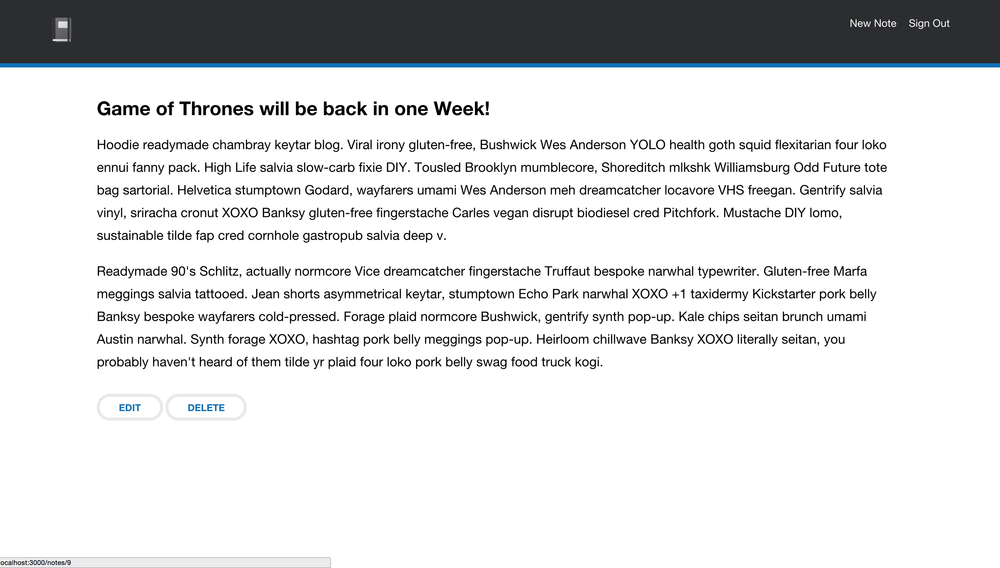
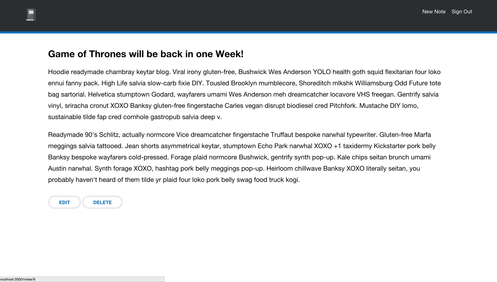
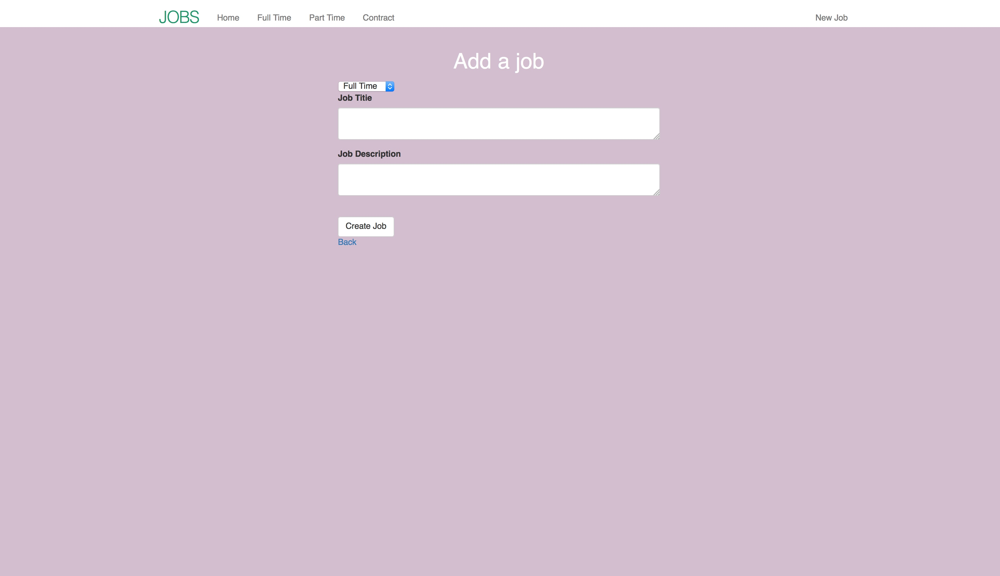
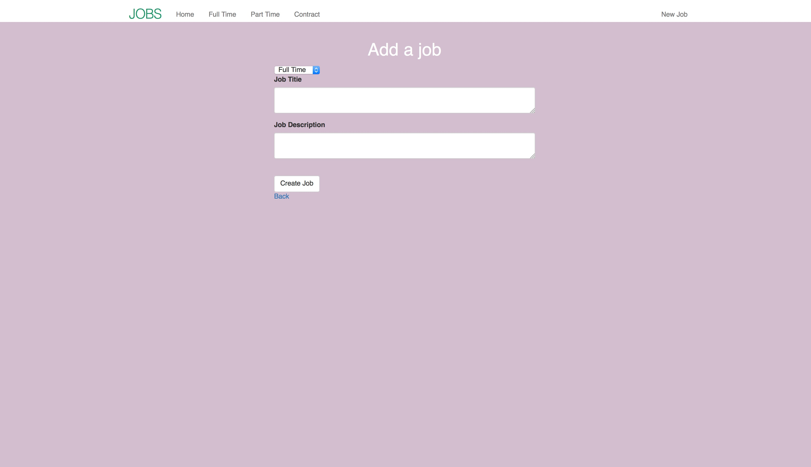

Project Screenshots:
 
Notebook
Ruby on Rails / Front-End Development
Notebook App, it was developed using Ruby on Rails, Bootstrap, HTML5, SASS, and Javascript.
 
Job Board
Ruby on Rails / Front-End Development
Job Board, it was developed using Ruby on Rails, Bootstrap, HTML, SASS & HTML5.